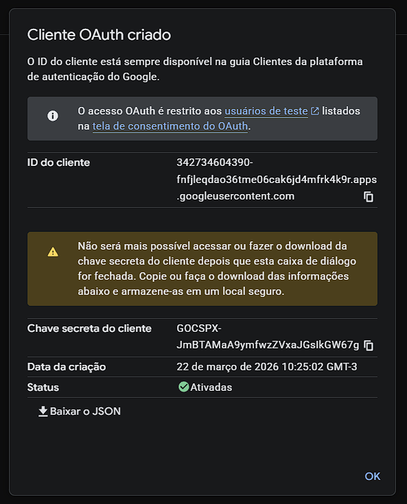
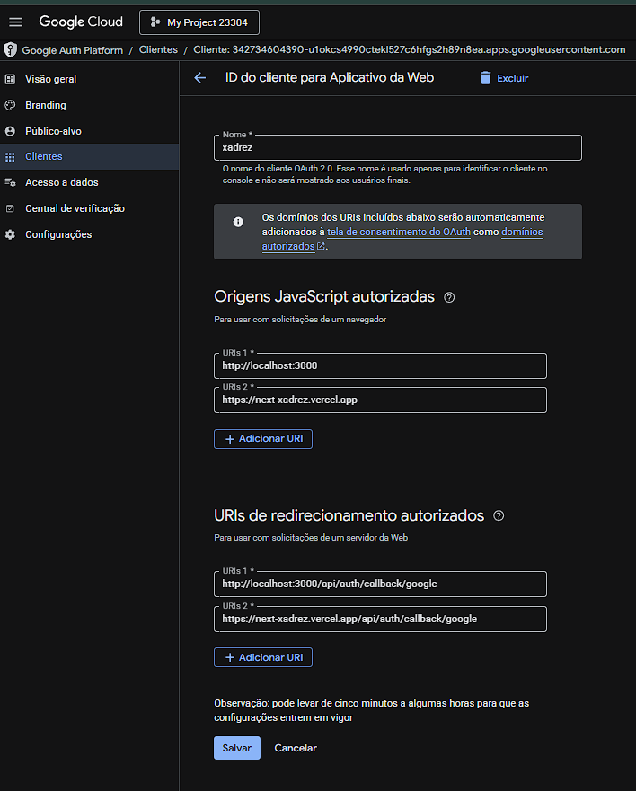

Tutorial
Next.js com Google Auth
Introdução ao Next.js com Google Auth
Este treinamento organiza a trilha completa para criar uma aplicação base com login Google, sessão autenticada e dashboard protegido usando Next.js.
Objetivo da base
Construir home, tela de login e dashboard autenticado com ações de sair e atualizar perfil.
Estado atual
O projeto ja existe em Next.js, usa App Router, possui credenciais principais no `.env.local` e agora tambem ja tem home, login, dashboard, rota real de auth e protecao via `proxy.ts`.
Entrega esperada
Uma base pronta para autenticação real, com fluxo validado do requisito inicial ao dashboard privado.
Requisitos para começar
Antes de configurar o Google Auth, a base local precisa estar saudável. Isso evita travas logo no início da trilha.
Essencial
Node.js instalado para rodar o projeto Next.js.
NPM funcionando para instalar dependências.
Editor preparado como VS Code.
Acesso ao Google Cloud Console para configurar OAuth.
Validação rápida
Confirme se o terminal responde aos comandos de versão.
node -v
npm -vO que confirmar
Node.js responde no terminal.
NPM responde no terminal.
Projeto local abre normalmente.
Conta Google Cloud acessível.
Quando o ambiente local está alinhado, a parte de autenticação fica muito mais previsível e o treinamento flui sem ruído desnecessário.
Criando o projeto Next.js
Mesmo com o projeto atual já criado, o treinamento precisa registrar como seria a criação do zero para deixar a trilha reutilizável.
Setup
Projeto inicial
npx create-next-app@latest next-auth
cd next-auth
npm run devLendo e validando o `.env.local`
O projeto já possui credenciais principais. Agora precisamos entender o que já existe e o que será padronizado para a autenticação.
Variáveis já encontradas
AUTH_SECRET, AUTH_GOOGLE_ID, AUTH_GOOGLE_SECRET, NEXTAUTH_LOCAL_URL, NEXTAUTH_EXTERNO_URL e NEXT_PORT_LOCAL.
Ajuste esperado
Padronizar a variável principal de URL para a biblioteca de autenticação, normalmente com AUTH_URL.
Env
Padrão sugerido
AUTH_SECRET="..."
AUTH_GOOGLE_ID="..."
AUTH_GOOGLE_SECRET="..."
AUTH_URL="http://localhost:3000"
AUTH_TRUST_HOST=trueAviso importante
Nesta base, a porta local esta em 3000.
Se voce mudar a porta, precisa alinhar `.env.local`, script de execucao, origem local e callback local no Google Console.
Se uma parte ficar em uma porta e outra em uma porta diferente, o login pode falhar com redirect_uri_mismatch.
Configurando o Google Console
Aqui cadastramos a aplicação, geramos as credenciais OAuth e definimos origens e callbacks válidos.
Passo a passo
Criar ou escolher um projeto.
Configurar a tela de consentimento OAuth.
Criar o cliente OAuth para aplicação web.
Salvar `client id` e `client secret`.
Configurar origens autorizadas.
Configurar callbacks autorizados.
O que cada parte faz
Tela de consentimento é a tela que o usuário vê antes de autorizar.
Cliente OAuth é o cadastro técnico da aplicação.
Origem autorizada define de onde o login pode começar.
URI de redirecionamento define para onde o usuário volta após autenticar.
Imagem: cliente OAuth criado
Esta imagem ajuda a reconhecer a tela em que o Google mostra o `client id` e o `client secret` logo após a criação.

Imagem: origens e callbacks
Aqui vemos exatamente onde cadastrar as origens JavaScript autorizadas e as URIs de redirecionamento autorizadas.

Atenção total com a porta local
Se a aplicacao estiver em http://localhost:3000, o Google Console tambem precisa usar 3000.
Se o Google Console continuar com outra porta, o login falha com redirect_uri_mismatch.
Revise sempre a origem local e o callback local quando mudar a porta do projeto.
Deploy Vercel
Depois do ambiente local e do Google Console, a publicacao na Vercel precisa repetir os pontos criticos do `.env.local` para a autenticacao continuar funcionando em producao.
Resumo dos 7 pontos importantes
1. `NEXTAUTH_EXTERNO_URL` como referencia da URL publicada.
2. `NEXTAUTH_URL` e `AUTH_URL` com a URL final da Vercel.
3. `AUTH_SECRET` cadastrado na Vercel.
4. `NEXTAUTH_SECRET` cadastrado na Vercel.
5. `AUTH_TRUST_HOST=true` na Vercel.
6. `AUTH_GOOGLE_ID` cadastrado na Vercel.
7. `AUTH_GOOGLE_SECRET` cadastrado na Vercel.
O que nao sobe
`NEXT_PORT_LOCAL` e apenas para desenvolvimento local.
`NEXTAUTH_LOCAL_URL` tambem e apenas para o ambiente local.
Na Vercel, o foco fica nas URLs publicas e nas credenciais de autenticacao.
Checklist de deploy:
1. Cadastrar as variaveis na Vercel.
2. Usar `https://next-auth-cyan-three.vercel.app` em `NEXTAUTH_URL`.
3. Usar `https://next-auth-cyan-three.vercel.app` em `AUTH_URL`.
4. Confirmar origem publicada no Google Console.
5. Confirmar callback publicado no Google Console.
Fluxo da aplicação
Depois do ambiente e do console, o usuário vai percorrer um fluxo simples e previsível.
Home
Tela inicial com CTA para entrar na conta.
Login
Botão `Entrar com Google` para iniciar o OAuth.
Dashboard
Área autenticada com nome, email, foto, sair e atualizar perfil.
1. O usuário abre a home.
2. Clica em entrar na conta.
3. Vai para a tela de login.
4. Clica em entrar com Google.
5. Autoriza o acesso no Google.
6. Volta autenticado para o sistema.
7. É redirecionado para o dashboard.
8. Pode atualizar perfil ou sair.
Implementação técnica do auth
Aqui organizamos a sequência de trabalho para sair do planejamento e montar a autenticação no projeto.
Dependência
Instalação
npm install next-authEstrutura
Arquivos esperados
src/
app/
api/
auth/
[...nextauth]/
route.ts
dashboard/
page.tsx
login/
page.tsx
page.tsx
auth.ts
proxy.tsTelas da aplicação
Estas são as três telas centrais que compõem a experiência do usuário nesta base.
Home
Título, descrição curta e botão `Entrar na conta`.
Login
Botão `Entrar com Google` e orientação curta do fluxo.
Dashboard
Nome, email, foto, botão `Atualizar perfil` e botão `Sair`.
Checklist de testes
Antes de considerar a base pronta, o ideal é validar interface, sessão e configuração do Google Console.
Interface
Home abre corretamente.
Login abre corretamente.
Dashboard exige autenticação.
Sair funciona.
Atualizar perfil funciona.
Google Console
Origem local cadastrada.
Origem publicada cadastrada.
Callback local cadastrado.
Callback de produção cadastrado.
Erros comuns
Alguns problemas aparecem com frequência nesse tipo de integração. Ter isso documentado acelera muito o diagnóstico.
`redirect_uri_mismatch`
A URI cadastrada no Google está diferente da URI usada pela aplicação. Nesta base, isso acontece com frequencia quando o projeto roda em uma porta diferente da cadastrada no Google Console.
`invalid_client`
Client id ou client secret incorretos.
Funciona local e quebra em produção
Normalmente a URL publicada não foi cadastrada ou as variáveis da hospedagem não foram configuradas.
Dashboard sem sessão
Geralmente faltou `AUTH_SECRET`, a configuração está incompleta ou a sessão está sendo lida de forma incorreta.
Resumo final
Fechamento da trilha validada, do requisito inicial até a base pronta para autenticação real.
Node.js e NPM precisam estar validados logo no começo.
Projeto Next.js pode ser criado do zero ou aproveitado se já existir.
`.env.local` precisa ser alinhado com o padrão esperado pela biblioteca.
Google Console exige atenção total nas origens e callbacks.
Home, login e dashboard compõem o fluxo mínimo da aplicação.
Proximo passo ideal e validar o login real no navegador e preparar a mesma configuracao para producao.